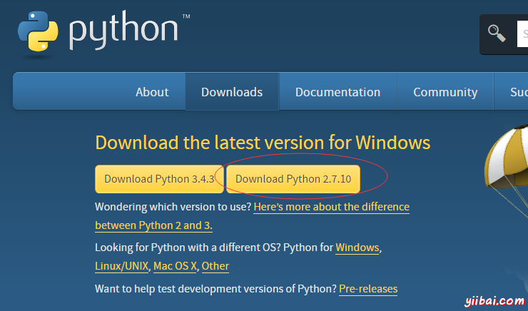
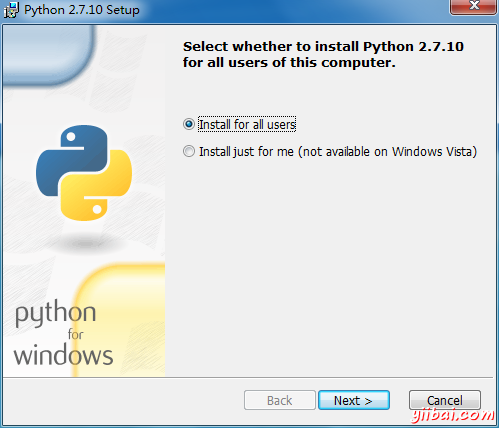
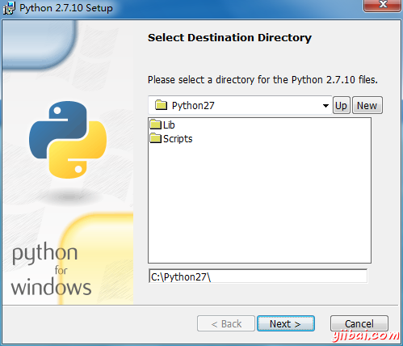
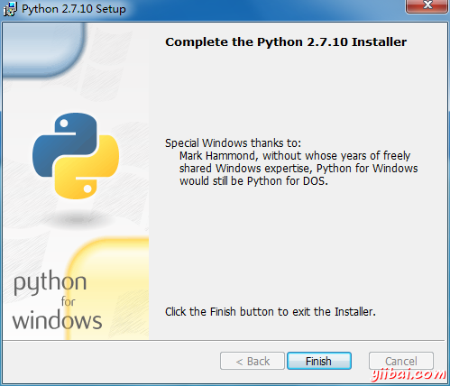
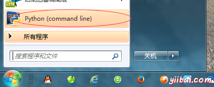
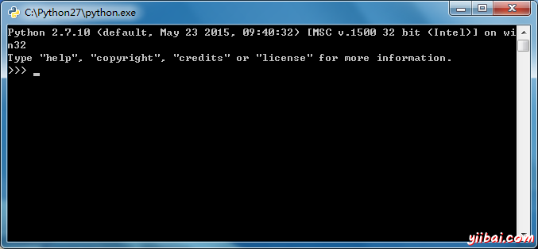

Python快速入门
Python是一种高层次，解释型，交互式和面向对象的脚本语言。
-
Python是解释型的
-
Python是交互式的
-
Python是面向对象的
-
Python是初学者的语言
Python是由Guido van Rossum在八十年代末和九十年代初在荷兰国家研究所数学与计算机科学研发的。
Python的突出特点包括：
-
易学
-
易阅读
-
易维护
-
拥有广泛的标准库
-
交互模式
-
可移植
-
可扩展
-
数据库
-
GUI 程序
-
可伸缩
获取Python
当前最新源代码，二进制文件，文档，新闻等，可在Python的官方网站找到。
Python 官方网站 : http://www.python.org/
可以从网站下载以下Python文档。文档有 HTML，PDF 和 PostScript __。
Python 文档网站 : www.python.org/doc/
Python安装（win7）
在本教程中，使用的是 python2.7 版本，当前已经发布了 python3 ，__________________，___ python3 的内容，会在后续的教程中发布，请关注： Python3教程 。打开官方网站的下载页面，如下所示：

点击 "Download Python 2.7.10" ____，___________，_______，__________： python-2.7.10.msi
下载完成后，双击 python-2.7.10.msi 这个二进制文件并安装，指定安装路径。
第一步： 双击 python-2.7.10.msi 安装

第二步： 选择安装路径

第三步： 将 Python 程序添加到“系统环境变量”

第四步： 安装完成！

第五步： 测试安装结果，点击“开始”，选择" Python(command line)"


到此，Python 的所有安装完成！接下来我们就可以编写测试 Python 程序了。
第一个Python程序
交互式模式编程：
调用解释不通过一个脚本文件作为参数，就可以调出以下提示（Linux平台下）：
root # python Python 2.5 ( r25 : 51908 , Nov 6 2007 , 16 : 54 : 01 ) [ GCC 4.1 . 2 20070925 ( Red Hat 4.1 . 2 - 27 )] on linux2 Type "help" , "copyright" , "credits" or "license" for more info . >>>
在 Python 提示符的右侧输入下列文本并按下回车键：
>>> print "Hello, Python!" ;
这将产生以下结果：
Hello , Python !
Python标识符
Python标识符是一个用来标识变量，函数，类，模块，或其他对象的名称。标识符是以字母A到Z或a〜z开始后面跟零个或多个字母下划线（_），下划线和数字（0〜9）。
Python不允许标点字符标识符，如@，$和％。Python是一种区分大小写的编程语言。 比如 Manpower 和 manpower 在Python中是两种不同的标识符。
下面是在Python标识符的命名约定：
-
类名称以大写字母，其他的标识符以小写字母。
-
单个前导下划线开始的标识符表示该标识符意味着约定是私有的。
-
开始是两个前导下划线的标识符表示强烈专用标识符。
-
如果标识符还具有两个尾随下划线结束时，所述标识符是语言定义的特殊名称。
保留字
下面的列表显示的是在Python的保留字。这些保留字不可以用作常量或变量或任何其它标识符名称。
| and | exec | not |
| assert | finally | or |
| break | for | pass |
| class | from | |
| continue | global | raise |
| def | if | return |
| del | import | try |
| elif | in | while |
| else | is | with |
| except | lambda | yield |
行和缩进
一个程序员在学习Python时，遇到的第一个注意事项是，Python中不使用括号来表示代码类/函数定义块或流量控制。 代码块由行缩进，这是严格执行表示。
缩进位数量是可变的，但是在块中的所有语句必须缩进量相同。在这个例子中，两个块都很好(没有问题)：
if True : print "True" else : print "False"
然而，在这个例子中，第二块将产生一个错误：
if True : print "Answer" print "True" else : print "Answer" print "False"
多行语句
在Python语句通常有一个新行表示结束。Python里面，但是，允许使用续行字符（\）表示该行应该继续。例如：
total = item_one + \ ________ + \ __________
包含在语句[], {}, 或()括号内不能使用续行字符。例如：
days = [ 'Monday' , 'Tuesday' , 'Wednesday' , 'Thursday' , 'Friday' ]
在Python中的引号
Python的接受单引号（'），双引号（“）和三（'''或”“”）引用来表示字符串，只要是同一类型的引号的开始和结束的字符串。
三重引号可以用来横跨多行字符串。例如，下面所有的表示都是合法的：
word = 'word' sentence = "This is a sentence." paragraph = """This is a paragraph. __ is made up of multiple _____ and sentences."""
在Python中的注释
哈希符号（＃）不是一个字符串字母开头，它是一个注释的开始。＃之后以及到物理行结束的所有字符都是注释的一部分，Python解释器会忽略它们。
#!/usr/bin/python # First comment print "Hello, Python!" ; # second comment
这将产生以下结果：
Hello , Python !
注释在一个语句或表达式后的同一行：
name = "Madisetti" # This is again _______
可以注释多行，如下所示：
# This is a _______. # This is a _______, too. # This is a _______, too. # I said that _______.
使用空行
仅包含空格，可能带有注释行，被称为一个空行，Python完全忽略它。
在交互式解释器会话，必须输入一个空的物理线路终止多行语句。
在一行上的多个语句
分号（;）允许在单一行上编写多条语句，语句开始一个新的代码块。下面是使用分号示例片断：
import sys ; x = 'foo' ; sys . stdout . write ( x + '\n' )
多组语句称为套件
组成一个单一的代码块个别语句组在Python中被称为套件。
组件或复杂的语句，如if，while，def和类，是那些需要一个标题行和套件。
标题行开始语句（用关键字），并终止并显示冒号（:），接着是一行或多行，组成套件。
例子：
if expression : _____ elif expression : _____ else : _____
Python - 变量类型
变量是什么，不是是保留在内存位置用来存储一些值。这意味着，当创建一个变量，它会在内存中保留一些空间。
根据一个变量的数据类型，解释器分配内存，并决定什么样的数据可以存储在保留存储器。 因此，通过分配不同的数据类型的变量，可以存储整数，小数或字符在这些变量中。
给变量赋值
在=操作符的左侧是变量名，在=运算符的右边是存储在变量中的值。例如：
counter = 100 # An integer assignment miles = 1000.0 # A floating point name = "John" # A string print counter print miles print name
标准数据类型
Python有五个标准数据类型：
-
数字
-
字符串
-
列表
-
元组
-
字典
Python的数字
当分配一个值给创建的 Number 对象。例如：
var1 = 1 var2 = 10
Python 支持四种不同的数值类型：
-
int (有符号整数)
-
long (长整数[也可以以八进制和十六进制表示])
-
float (浮点实数值)
-
complex (复数)
这里是数字的一些例子：
| int | long | float | complex |
|---|---|---|---|
| 10 | 51924361L | 0.0 | 3.14j |
| 100 | -0x19323L | 15.20 | 45.j |
| -786 | 0122L | -21.9 | 9.322e-36j |
| 080 | 0xDEFABCECBDAECBFBAEL | 32.3+e18 | .876j |
| -0490 | 535633629843L | -90. | -.6545+0J |
| -0x260 | -052318172735L | -32.54e100 | 3e+26J |
| 0x69 | -4721885298529L | 70.2-E12 | 4.53e-7j |
Python字符串
Python的字符串在引号之间确定为一组连续的字符。
例子：
str = 'Hello World!' print str # Prints complete string print str [ 0 ] # Prints first character __ the string print str [ 2 : 5 ] # Prints characters starting ____ 3rd to 6th print str [ 2 :] # Prints string starting ____ 3rd character print str * 2 # Prints string two _____ print str + "TEST" # Prints concatenated string
Python 列表
列表是最通用的 Python 复合数据类型。列表包含在方括号 ([]) ______，____________。
#!/usr/bin/python list = [ 'abcd' , 786 , 2.23 , 'john' , 70.2 ] tinylist = [ 123 , 'john' ] print list # Prints complete list print list [ 0 ] # Prints first element __ the list print list [ 1 : 3 ] # Prints elements starting ____ 2nd to 4th print list [ 2 :] # Prints elements starting ____ 3rd element print tinylist * 2 # Prints list two _____ print list + tinylist # Prints concatenated lists
Python 元组
元组是类似于另一列表序列的数据类型。元组中由数个逗号分隔每一个值。 不像列表，元组中括号括起来。
元组可以被认为是只读的列表。
tuple = ( 'abcd' , 786 , 2.23 , 'john' , 70.2 ) tinytuple = ( 123 , 'john' ) print tuple # Prints complete list print tuple [ 0 ] # Prints first element __ the list print tuple [ 1 : 3 ] # Prints elements starting ____ 2nd to 4th print tuple [ 2 :] # Prints elements starting ____ 3rd element print tinytuple * 2 # Prints list two _____ print tuple + tinytuple # Prints concatenated lists
Python字典
Python的字典是哈希表类型。它们运作就像关联数组或类似在Perl中的哈希，由键值对组成。
tinydict = { 'name' : 'john' , 'code' : 6734 , 'dept' : 'sales' } print dict [ 'one' ] # Prints value for 'one' key print dict [ 2 ] # Prints value for 2 key print tinydict # Prints complete dictionary print tinydict . keys () # Prints all the ____ print tinydict . values () # Prints all the ______
Python基本运算符
假设 a = 10， _ = 20 那么：| 运算符 | 描述 | 示例 |
|---|---|---|
| + | 加法 - 运算符的两侧的值增加 | a + b = 30 |
| - | 减法- 从操作符左侧减去右手侧的值 | a - b = -10 |
| * | 乘法- 相乘的运算符的两侧值 | a * b = 200 |
| / | 除法 - 由操作符的右侧的值除以左侧的值 | b / a = 2 |
| % | 模- 由运算符的左侧除以运算符右侧返回余数 | b % a = 0 |
| ** | 指数幂- 执行运算符的指数（幂）计算 | a**b = 10 的 20 __ |
| // | Floor Division - Floor除法 - 操作数相除，其结果的小数点后的数字将被删除。 | 9//2 = 4 ， 9.0//2.0 = 4.0 |
| == | 检查两个操作数的值是否相等，如果是，则条件为真。 | (a == b) 不为真 ____. |
| != | 检查两个操作数的值相等与否，如果值不相等，则条件变为真。 | (a != b) 为 true. |
| <> | 检查两个操作数的值相等与否，如果值不相等，则条件变为真。 | (a <> b) 为 true. _____&____;!= 运算符 |
| > | 检查左边的操作数的值是否大于右操作数的值，如果是，则条件为真。 | (a > b) 不为 true. |
| < | 检查左边的操作数的值是否小于右操作数的值，如果是，则条件为真。 | (a < b) 为 true. |
| >= | 检查左边的操作数的值是否大于或等于右操作数的值，如果是，则条件为真。 | (a >= b) 不为 ____. |
| <= | 检查左操作数的值是否小于或等于右操作数的值，如果是，则条件变为真。 | (a <= b) 为 ____. |
| = | 简单的赋值运算符，从右侧的操作数赋值给左侧的操作数 | c = a + _ 将分配 a + b 的值到 c |
| += | 相加并赋值运算符，它增加了右操作数到左操作数并分配结果到左操作数 | c += a 相当于 _ = c + a |
| -= | 相减并赋值运算符，它从左操作数减去右操作数并分配结果到左边操作数 | c -= a 相当于 _ = c - a |
| *= | 乘法并赋值运算符，左操作数乘以右边的操作数并分配结果值到左操作数 | c *= a 相当于 _ = c * a |
| /= | 除法并赋值运算符，左操作数除以右操作数并分配结果到左操作数 | c /= a 相当于 c = _ / a |
| %= | 模量和赋值运算符，两个操作数模量并分配结果到左操作数 | c %= a 相当于 c = _ % a |
| **= | 指数和赋值运算符，执行指数（次幂）计算的运算符并赋值给左操作数 | c **= a 相当于 c = _ ** a |
| //= | Floor除法，并分配一个值，执行Floor除法运算并赋值给左操作数 | c //= a 相当于 c = _ // a |
| & | 二进制和操作拷贝位结果，如果它存在于两个操作数。 | (a & b) = 12 也就是 0000 1100 |
| | | 二进制或运算符复制位如果它存在一个操作数中。 | (a | b) = 61&____;___&____;0011 1101 |
| ^ | 二进制异或运算符复制，如果它设置在一个操作数，而不是两个比特。 | (a ^ b) = 49&____;&____;___&____;0011 0001 |
| ~ | 二进制的补运算符是一元的，具有“翻转”位的效应。 | (~a ) = -61 ___ 1100 0011 以2的补码形式，由于一个带符号二进制数。 |
| << | 二进制向左移位运算符。左边的操作数的值向左移动由右操作数指定的位数。 | a << 2 = 240 也就是 1111 0000 |
| >> | 二进制向右移位运算符。左边的操作数的值是通过右操作数指定向右移动的位数。 | a >> 2 = 15&____;___&____;0000 1111 |
| and | 所谓逻辑和运算符。如果两个操作数为真，那么则条件为真。 | (a 和 b) 为 ____. |
| or | 所谓逻辑OR运算符。如果任何两个操作数都非零那么条件变为真。 | (a 或 b) 为 ____. |
| not | 所谓逻辑非运算符。用来反转其操作数的逻辑状态。如果条件为真，那么逻辑非操作符执行结果则为假。 | not(a && b) 为 false. |
| in | 计算结果为真，如果找到了变量指定的序列，否则为假。 | x 在 y 中, 这里 in 结果是 1 ，如果 x is _ y 序列成员 |
| not in | 如果变量没有在指定的顺序找到计算结果为真，否则为假。 | x 不在 y 中, 这里 not in 结果是 1 ，如果 x 序列 不是 y 的成员。 |
| is | 如果操作符两侧的变量是同一个对象计算结果为真，否则为假。 | x 是 y, 这里 is 结果就是 1 ，如果 id(x) == __(_) 结果为 真. |
| is not | 如果操作符两侧的变量为同一个对象，计算结果为假，否则真。 | x 不是 y, 如果 __(_) 不为 id(y) 这里 is not 结果为 1 |
Python运算符优先级
下表列出了所有运算符从最高优先级到最低。
| 操作符 | 描述 |
|---|---|
| ** | 幂（指数次幂） |
| ~ + - | 补充，一元加号和减号（方法名最后两个+@和 -@） |
| * / % // | 乘法，除法，取模和floor除法 |
| + - | 加法和减法 |
| >> << | 左，右按位移位 |
| & | 位 '与' |
| ^ | | 按位异'或'和常规'或' |
| <= < > >= | 比较运算符 |
| <> == != | 运算符相等 |
| = %= /= //= -= += |= &= >>= &__;&__;= *= **= | 赋值运算符 |
| is is not | 标识运算符 |
| in not in | 运算符 |
| note or and | 逻辑运算符 |
if 语句
if语句的语法是：
if expression : statement ( s )
else 语句
以下是 if...else 语句的语法:
if expression : statement ( s ) else : statement ( s )
elif 语句
以下是 if...elif 语句的语法：
if expression1 : statement ( s ) elif expression2 : statement ( s ) elif expression3 : statement ( s ) else : statement ( s )
内嵌 if...elif...else 结构
以下是内嵌的 if...elif...else 结构的语法：
if expression1 : statement ( s ) if expression2 : statement ( s ) elif expression3 : statement ( s ) else statement ( s ) elif expression4 : statement ( s ) else : statement ( s )
while 循环
以下是 while 循环的语法：
while expression : statement ( s )
无限循环
使用while循环时务必小心，因为如果这个条件永远解析为一个假值时，这会导致在一个循环中，永远不会结束。这种循环被称为一个无限循环。
其中，服务器需要连续运行，以使客户程序可以在有需要时与它进行通信，无限循环可能是在客户机/服务器编程有用到。
单个语句套件
类似于if语句的语法，如果while子句仅由一个单一的语句时，它可以被放置在相同的行中所述while的头部位置。
这里是一个单行while子句的例子：
while expression : statement
for 循环
for循环的语法是：
for iterating_var in sequence : statements ( s )
遍历序列索引
替代方式是通过每个项目迭代，索引偏移到序列本身：
fruits = [ 'banana' , 'apple' , 'mango' ] for index in range ( len ( fruits )): print 'Current fruit :' , fruits [ index ] print "Good bye!"
break 语句
Python中的break语句终止当前的循环，并继续执行下一条语句，就像在C中的传统的break语句一样。
break语句最常见的用途是当一些外部条件被触发，需要从一个循环马上退出。break语句可以在 while 和 for ______。
for letter in 'Python' : # First Example if letter == 'h' : break print 'Current Letter :' , letter var = 10 # Second Example while var > 0 : print 'Current variable value :' , var var = var - 1 if var == 5 : break print "Good bye!"
continue 语句
在Python中，continue语句返回控制 while 循环的开始。 continue语句拒绝执行循环的当前迭代所有剩余的语句，并移动控制回到循环的顶部（开始位置）。
continue语句可以在 while 和 for _______。
for letter in 'Python' : # First Example if letter == 'h' : continue print 'Current Letter :' , letter var = 10 # Second Example while var > 0 : print 'Current variable value :' , var var = var - 1 if var == 5 : continue print "Good bye!"
在循环中使用else语句
Python支持有一个循环语句相关联的else语句。
-
如果一个for循环使用else语句，当循环已用尽迭代列表执行else语句。
-
如果else语句使用在while循环，当 while 条件为假else语句执行。
pass 语句
Python中的pass语句，语法上必需的，但又不希望执行任何命令或代码。
pass语句是个空操作;在执行时什么也不会发生。 pass也是一个有用的地方，因为这里代码最终是有用的，只是一直没有写，但（例如，以存根为例）：
#!/usr/bin/python for letter in 'Python' : if letter == 'h' : pass print 'This is pass block' print 'Current Letter :' , letter print "Good bye!"
定义一个函数
可以定义函数，以提供所需的功能。下面是在Python定义一个函数的简单规则：
-
函数块首先以 def 关键字后跟函数名和括号 ( ( ) )
-
任何输入参数或参数应放在这些括号内。 还可以定义这些括号内的参数。
-
函数的第一个语句可以是一个可选的声明 - 函数的文档字符串或文档字符串。
-
每个函数中的代码块用冒号(:) 开始和缩进。
-
该语句返回[表达]退出函数，可选地传递回一个表达式给调用者。 不带参数的return语句返回None是一样的。
语法
def functionname ( parameters ): "function_docstring" function_suite return [ expression ]
默认情况下，参数有一个位置的行为，需要以相同的顺序定义它们。
例子：
这是最简单的Python函数形式。 函数将一个字符串作为输入参数并打印标准屏幕上。
def printme ( str ): "This prints a passed ______ into this function" print str return
调用函数
定义一个函数仅赋予它一个名字，指定将被包括在该函数的参数，以及代码块结构。
一旦函数的基本结构确定后，就可以通过从其它函数或直接从Python提示符调用它执行它。
下面是一个调用 printme()函数的例子：
#!/usr/bin/python # Function definition is ____ def printme ( str ): "This prints a passed ______ into this function" print str ; return ; # Now you can ____ printme function printme ( "I'm first call to ____ defined function!" ); printme ( "Again second call to ___ same function" );
这将产生以下输出结果：
I 'm first call to ____ defined function! Again second call __ the same function
Python 模块
模块允许在逻辑上组织Python代码。将相关代码放到一个模块使代码更容易理解和使用。
模块是可以绑定和参考任意命名的属性的Python对象。
简单地说，一个模块是由Python代码的文件组成。模块可以定义函数，类和变量。模块也可以包括可运行的代码。
例子：
Python 中一个名为 aname 的模块代码通常位于一个文件名为 aname.py. _____________，_____.__
def print_func ( par ): print "Hello : " , par return
import 语句
可以通过使用 import 语句在其他一些Python源文件作为一个模块执行任何Python源文件。import 的语法如下：
import module1 [, module2 [,... moduleN ]
当解释遇到import语句，如果模块存在于搜索路径它导入模块。搜索路径是一个目录列表，解释器在导入模块之前搜索。
例子：
要导入模块hello.py，需要把下面的命令在脚本的顶部：
#!/usr/bin/python # Import module hello import hello # Now you can ____ defined function that module __ follows hello . print_func ( "Zara" )
这将产生以下输出结果：
Hello : Zara
一个模块只被装载一次，而不管导入的次数。如果多个导入出现这可以防止模块执行一遍又一遍。
打开和关闭文件
open函数：
在可以读取或写入一个文件之前，必须使用Python的内置open()函数来打开文件。这个函数创建文件对象，这将被用来调用与其相关联其他支持方法。
语法
file object = open ( file_name [, access_mode ][, buffering ])
下面是详细的参数说明：
-
file_name : file_name参数是一个字符串值，包含要访问的文件的名称。
-
access_mode : access_mode 确定该文件已被打开，即模式。读，写等追加。可能值的一个完整列表在下表中给出。这是可选的参数，默认文件访问模式是读(r)
-
buffering : 如果缓冲值被设置为0，没有缓冲将发生。如果该缓冲值是1，将在访问一个文件进行行缓冲。如果指定的缓冲值作为大于1的整数，那么缓冲操作将被用指定缓冲器大小进行。这是可选的参数。
这里是打开一个文件的不同模式的列表：
| 模式 | 描述 |
|---|---|
| r | 打开一个文件为只读。文件指针被放置在文件的开头。这是默认模式。 |
| rb | 打开一个文件只能以二进制格式读取。文件指针被放置在文件的开头。这是默认模式。 |
| r+ | 打开用于读取和写入文件。文件指针将在文件的开头。 |
| rb+ | 打开用于读取和写入二进制格式的文件。文件指针将在文件的开头。 |
| w | 打开一个文件只写。覆盖文件，如果文件存在。如果该文件不存在，创建并写入一个新的文件。 |
| wb | 打开一个文件只能以二进制格式写入。如果文件存在覆盖文件。如果该文件不存在，创建并写入一个新的文件。 |
| w+ | 为写入和读取打开文件。如果文件存在覆盖现有文件。如果该文件不存在，创建并读取和写入的新文件。 |
| wb+ | 打开文件用于二进制格式写入和读取。如果文件存在覆盖现有文件。如果该文件不存在，创建并读取和写入新文件。 |
| a | 打开追加的文件。如果该文件存在，文件指针在文件的末尾。 也就是说，文件是在追加模式。如果该文件不存在，它会创建用于写入新文件。 |
| ab | 打开文件用于追加在二进制格式。如果该文件存在，文件指针在文件的末尾。也就是说，文件在追加模式。如果该文件不存在，它会创建新文件用于写入。 |
| a+ | 打开文件为追加和读取。如果该文件存在，文件指针在文件的末尾。文件在追加模式。如果该文件不存在，它创建新文件并读取和写入。 |
| ab+ | 打开文件以二进制格式附加和读取文件。如果该文件存在，文件指针在文件的末尾。文件将在追加模式。如果该文件不存在，它将创建新文件用于读取和写入。 |
文件对象的属性：
一旦文件被打开，就有一个文件对象，可以得到有关该文件的各种信息。
下面是文件对象相关的所有属性的列表：
| 属性 | 描述 |
|---|---|
| file.closed | 如果文件被关闭返回true，否则为false。 |
| file.mode | 返回具有该文件打开的访问模式。 |
| file.name | 返回文件名。 |
| file.softspace | 如果明确要求打印带有空格返回false，否则返回true。 |
close() 方法
一个文件对象的close()方法刷新未写入所有信息，并关闭文件对象，之后的数据写入将出错。
fileObject . close ();
读取和写入文件
write() 方法:
语法
fileObject . write ( string );
read() 方法
语法
fileObject . read ([ count ]);
文件位置
tell()方法告诉文件内的当前位置，下一个读或写将从该文件的开头起计算经过的字节数长度：
seek(offset[, from])方法改变当前文件的位置。offset参数指示要移动的字节数。from参数指定从什么位置起参考要要移动字节数。
如果from设置为0，这意味着使用该文件的开头作为基准位置， ，设置1时使用当前位置作为基准位置，如果它被设置为2，则该文件的末尾将作为基准位置。
重命名和删除文件
语法
os . rename ( current_file_name , new_file_name )
remove() 方法
语法
os . remove ( file_name )
Python中的目录
mkdir() 方法:
可以使用os模块中的mkdir()方法在当前目录下创建目录。需要提供参数到这个方法，其中包含的目录是要创建的目录的名称。
语法
os . mkdir ( "newdir" )
chdir() 方法
可以使用chdir()方法来改变当前目录。chdir()方法接受一个参数，就是要进入目录的目录名称。
语法
os . chdir ( "newdir" )
getcwd() 方法
getcwd() 方法显示当前的工作目录。
语法
os . getcwd ()
rmdir() 方法
rmdir()方法删除目录，这是通过作为方法的参数（目录）。
在删除一个目录，其中的所有内容都会被删除。
语法
os . rmdir ( 'dirname' )
处理异常
如果有一些可疑代码可能会引发异常， 可以通过将可疑代码放在一个try: 块以防程序出现问题。 在 try: 块之后, ____&____;______:&____;__, 接着是它的代码块尽可能优雅处理问题。
语法
以下是简单的 try....except...else 块的语法:
try : Do you operations here ; ...................... except ExceptionI : If there is ExceptionI , then execute this block . except ExceptionII : If there is ExceptionII , then execute this block . ...................... else : If there is no exception then execute this block .
这里有一些关于上面提到的语法要点：
-
一个try语句可以有多个except语句。当try块包含了可能抛出不同类型的异常声明这是非常有用的。
-
也可以提供一个通用的except子句，来处理任何异常。
-
except子句后，可以包括一个 else 子句。 在else块中的代码，如果在try:块执行代码没有引发异常。
-
else区块代码是不需要try:块的保护的。
except子句没有异常
也可以使用除具有如下定义没有异常声明：
try : Do you operations here ; ...................... except : If there is any exception , then execute this block . ...................... else : If there is no exception then execute this block .
except子句与多个异常
也可以使用相同的 except 语句来处理多个异常，如下所示：
try : Do you operations here ; ...................... except ( Exception1 [, Exception2 [,... ExceptionN ]]]): If there is any exception from the given exception ____ , then execute this block . ...................... else : If there is no exception then execute this block .
标准异常
这是在Python提供一个标准异常的列表： 标准异常
try-finally 子句
可以使用try:块连同try:块一起。finally块是一个地方放置代码必须执行，无论在try块是否引发异常代码都会执行。try-finally语句的语法是这样的：
try : Do you operations here ; ...................... Due to any exception , this may be skipped . finally : This would always be ________ . ......................
发生异常的参数
一个异常可以有一个参数，它是一个值，该值给出了有关问题的其他信息。 异常参数的内容各不相同。可以通过不同的子句中提供的变量，捕获异常的参数如下所示：
try : Do you operations here ; ...................... except ExceptionType , Argument : You can print value of Argument here ...
引发一个异常
可以通过使用 raise 语句的几种方式引发异常。一般 raise _____。
语法
raise [ Exception [, args [, traceback ]]]
用户定义的异常
Python中，还可以通过内置的异常标准的派生类来创建自己的异常类。
这里是一个例子有关 RuntimeError. 这里说的是从 RuntimeError 类创建一个子类。当需要显示更具体的信息时，一个异常被捕获，这非常有用。
在try块，用户定义的异常引发，陷入在 except 块中。变量e被用来创建 Networkerror ______。
class Networkerror ( RuntimeError ): def __init__ ( self , arg ): self . args = arg
所以一旦上面的类定义后，可以按如下引发的异常：
try : raise Networkerror ( "Bad hostname" ) except Networkerror , e : print e . args
创建类
class语句创建一个新的类定义。 类的名称紧跟在关键字class后，接着又跟一个冒号，如下所示：
class ClassName : 'Optional class documentation string' class_suite
-
这个类可以通过 ClassName.__doc__ 访问一个文档字符串
-
class_suite包括所有组件语句，定义类成员，数据属性和函数。
创建实例对象：
要创建一个类的实例，调用类使用类名和传递参数给__init__方法接收。
"This would create first ______ of Employee class" emp1 = Employee ( "Zara" , 2000 ) "This would create second ______ of Employee class" emp2 = Employee ( "Manni" , 5000 )
访问属性
可以访问使用点(.)对象的运算符来访问对象的属性。类变量会使用类名来访问，如下所示：
emp1 . displayEmployee () emp2 . displayEmployee () print "Total Employee %d" % Employee . empCount
内置类的属性
每个Python类保存有下列内置属性，它们可以使用点运算符像任何其他属性来访问：
-
__dict__ : 字典包含类的命名空间。
-
__doc__ : 类文档字符串，或者如果是None那么表示未定义。
-
__name__: 类名
-
__module__: 其中类定义的模块名称。此属性在交互模式为“__main__”。
-
__bases__ : 一个可能为空的元组包含基类，其基类列表为出现的顺序。
销毁对象（垃圾回收）
Python删除不需要的对象（内置类型或类实例）会自动释放内存空间。由Python周期性回收的内存块，不再是在使用过程中回收被称为垃圾收集。
Python的垃圾收集程序执行过程中运行，当一个对象的引用计数为零时被触发。一个对象的引用计数变化为别名的数量指向它改变：
当它分配一个新的名称或放置在容器（列表，元组，或字典）的对象的引用计数增加。当它使用 del 删除对象减少引用计数 ,它引用被重新分配，或者其参考超出作用域。当一个对象的引用计数为零，Python会自动收集它。
类继承
相反，从头开始，可以通过在新类名称后列表括号中的父类，从预先存在的类派生它来创建一个类：
子类继承父类的属性，可以使用这些属性，就好像是在子类中定义一样。从父类，子类还可以重写数据成员和方法。
语法
派生类的声明很像它们的父类;然而，从类名之后给出继承的基类的列表：
class SubClassName ( ParentClass1 [, ParentClass2 , ...]): 'Optional class documentation string' class_suite
重载方法
随时可以覆盖父类的方法。其中一个覆盖父类方法的原因，是因为可能想在在子类中特殊或实现不同的功能。
class Parent : # define parent class def myMethod ( self ): print 'Calling parent method' class Child ( Parent ): # define child class def myMethod ( self ): print 'Calling child method' c = Child () # instance of child c . myMethod () # child calls overridden ______
重载方法的基础
下表列出了一些通用的功能，可以在自己的类中覆盖：
| SN | 方法，说明与示例调用 |
|---|---|
| 1 |
__init__ ( self [,args...] ) 构造函数（任何可选参数） 调用示例 : obj = className(args) |
| 2 |
__del__( self ) 析构函数，删除对象 调用示例 : dell obj |
| 3 |
__repr__( self ) 求值的字符串表示 调用示例 : repr(obj) |
| 4 |
__str__( self ) 可打印字符串表示 调用示例 : str(obj) |
| 5 |
__cmp__ ( self, x ) 对象比较 调用示例 : cmp(obj, x) |
运算符重载
假设我们已经创建了一个Vector类来表示二维向量。 当使用加运算符来添加它们，会发生什么？最有可能Python会责骂我们。
但是可以定义 __add__ 方法类进行向量加法，然后相加运算符的行为也会按预期：
#!/usr/bin/python class Vector : def __init__ ( self , a , b ): self . a = a self . b = b def __str__ ( self ): return 'Vector (%d, %d)' % ( self . a , self . b ) def __add__ ( self , other ): return Vector ( self . a + other . a , self . b + other . b ) v1 = Vector ( 2 , 10 ) v2 = Vector ( 5 ,- 2 ) print v1 + v2
数据隐藏
一个对象的属性可以或不可以在类定义外部可见。对于这些情况，可以命名以双下划线前缀属性，这些属性将不会直接外部可见：
#!/usr/bin/python class JustCounter : __secretCount = 0 def count ( self ): self . __secretCount += 1 print self . __secretCount counter = JustCounter () counter . count () counter . count () print counter . __secretCount
正则表达式是字符的特殊序列，可帮助匹配或查找其他字符串或设置字符串， 使用模式在特殊的语法。正则表达式被广泛应用于UNIX的世界中。
Python中的模块re提供了Perl般的正则表达式的全面支持。 如果在编译或使用正则表达式时发生错误，re模块引发异常re.error。
我们将包括在其中将用于处理的正则表达式的两个重要功能。但是，首先：当它们在正则表达式中使用这此字符将有特殊的含义。 为了避免任何混乱当使用正则表达式处理时，我们会用原始字符串为 r'expression'.
match 函数
此函数尝试重新模式匹配字符串并可选标志（flags）。
下面是此函数的语法：
re . match ( pattern , string , flags = 0 )
这里是参数的说明：
| 参数 | 描述 |
|---|---|
| pattern | 这是正则表达式将要匹配。 |
| string | 这是一个将要搜索匹配的模式的字符串 |
| flags | 可以以互斥指定不同的标志 OR (|). 这些是列于下表中的修辞符。 |
re.match 函数成功返回匹配对象，失败返回 None。我们可以使用 group(num) 或 groups() 匹配对象的函数来获取匹配的表达式。
| 匹配对象的方法 | 描述 |
|---|---|
| group(num=0) | 这个方法返回整个匹配（或指定分组num） |
| groups() | 方法返回所有匹配的子组中的一个元组（空，如果没有发现任何） |
search 函数
此函数查找字符串内使用可选的标志第一次出现的RE模式。
下面是此函数语法的：
re . string ( pattern , string , flags = 0 )
这里是参数的说明：
| 参数 | 描述 |
|---|---|
| pattern | 这是正则表达式匹配。 |
| string | 这是一个将要搜索匹配的模式的字符串 |
| flags | 可以以互斥指定不同的标志（flag） OR (|). 这些修辞符列于下表中。 |
re.search函数返回成功则匹配的对象，失败则返回None。我们将使用 group(num) 或 groups() 匹配对象的函数来得到匹配的表达式。
| 匹配对象的方法 | 描述 |
|---|---|
| group(num=0) | 这个方法返回整个匹配（或指定分组num） |
| groups() | 该方法返回所有匹配的子组中的一个元组（空，如果没有找到） |
匹配VS搜索
Python的提供两种不同的原语操作基于正则表达式：match匹配检查匹配仅在字符串的开头，当搜索检查匹配字符串中的任何地方（这是Perl并默认的情况）。
搜索和替换
一些最重要re方法使用正则表达式为sub。
语法
sub ( pattern , repl , string , max = 0 )
这种方法用repl替换所有在字符串的RE模式，全部替换，除非出现最大提供。方法将返回修改后的字符串。
正则表达式修饰符 - 选项标志
正则表达式文字可能包括一个可选的修饰符来控制匹配的各个方面。修饰符指定为可选标志。可以提供多个以互斥 OR (|) 修改, 如前所示，并且可以由其中一个来表示：
| 修辞符 | 描述 |
|---|---|
| re.I | 执行不区分大小写匹配。 |
| re.L | 根据当前的语言环境来解释词语。这种解释影响按字母顺序小组(\w 和 \W), 以及单词边界行为 (\_ 和 \B) |
| re.M | 使得$匹配未端的一行（字符串不仅仅是末端），使^匹配任何行（不只是字符串的开始）的开始。 |
| re.S | 使一个句点匹配任何字符，包括换行。 |
| re.U | 根据Unicode字符集解释字母。这个标志影响 \w, \W, \b, \B 的行为 |
| re.X | 许可 “cuter”正则表达式语法。 它忽略空格（除组[]内，或当一个反斜杠转义），对待转义＃作为注释标记。 |
正则表达式模式
除了控制字符, (+ ? . * ^ $ ( ) [ ] { } | \), __________。______________________。
下表列出了正则表达式语法可在Python中使用。
| 模式 | 描述 |
|---|---|
| ^ | 匹配一行的开始 |
| $ | 匹配一行的结尾 |
| . | 匹配除了换行符的任何单个字符。使用-m选项也可允许它匹配换行符 |
| [...] | 匹配括号内任何单个字符 |
| [^...] | 匹配任何不在括号内的单个字符 |
| re* | 匹配0个或多个出现在前面表达式 |
| re+ | 匹配0或1出现在前面表达式 |
| re{ n} | 精确匹配n个前面表达式的数目 |
| re{ n,} | 匹配n次或多次出现前面表达式 |
| re{ n, m} | 匹配至少n和最多m个在前面表达式 |
| a| b | 匹配 a 或 b |
| (re) | 组正则表达式和匹配记住文本 |
| (?imx) | 临时切换上i, m, 或 x ___________。_____，__________ |
| (?-imx) | 临时切换上i, m, 或 x ___________。&____;__________ |
| (?: re) | 组正则表达式无需记住匹配的文本 |
| (?imx: re) | 临时切换上i, m, 或 x _______ |
| (?-imx: re) | 临时关闭切换i, m, 或 x _______ |
| (?#...) | 注释 |
| (?= re) | 指定位置使用模式。不必在一个范围内 |
| (?! re) | 指定使用模式取相反位置，而不必一个范围 |
| (?> re) | 匹配独立模式而不回溯 |
| \w | 匹配单词字符 |
| \W | 匹配非单词字符 |
| \s | 匹配的空白符，相当于 [\t\n\r\f] |
| \S | 匹配非空白符 |
| \d | 匹配数字。相当于 [0-9] |
| \D | 匹配非数字 |
| \A | 匹配字符串的开始/开头部分 |
| \Z | 匹配字符串的结尾。如果一个换行符存在，它只匹配换行之前部分 |
| \z | 匹配字符串的结尾 |
| \G | 匹配一点，最后一次匹配结束 |
| \b | 匹配单词边界在括号之外。当匹配退格在（0×08）括号内 |
| \B | 匹配非单词边界 |
| \n, \t, etc. | 匹配换行符，回车，制表符等 |
| \1...\9 | 匹配第n个分组的子表达式 |
| \10 | 匹配n次分组的子表达式，如果它已经匹配。否则指的是字符码的八进制表示。 |
正则表达式的例子
文字字符
| 示例 | 描述 |
|---|---|
| python | 匹配 "python". |
字符类别
| 示例 | 描述 |
|---|---|
| [Pp]ython | 匹配 "Python" 或 "python" |
| rub[ye] | 匹配 "ruby" 或 "rube" |
| [aeiou] | 匹配任何一个小写 元音 |
| [0-9] | 匹配任何数字; 如同 [0123456789] |
| [a-z] | 匹配任何小写ASCII字母 |
| [A-Z] | 匹配任意大写ASCII字母 |
| [a-zA-Z0-9] | 匹配任何上述的 |
| [^aeiou] | 匹配任何不是小写元音 |
| [^0-9] | 匹配以外的任何其他数字 |
特殊字符类
| 示例 | 描述 |
|---|---|
| . | 匹配除换行符任何字符 |
| \d | 匹配一个数字: [0-9] |
| \D | 匹配一个非数字: [^0-9] |
| \s | 匹配一个空白字符: [ \t\r\n\f] |
| \S | 匹配非空白: [^ \t\r\n\f] |
| \w | 一个单词字符: [A-Za-z0-9_] |
| \W | 匹配一个非单词字符: [^A-Za-z0-9_] |
重复案例
| 示例 | 描述 |
|---|---|
| ruby? | 匹配 "rub" 或 "ruby": _ 是可选的 |
| ruby* | 匹配"rub" 加上 0 或多个 ys |
| ruby+ | 匹配 "rub" 加上 1 或多个 ys |
| \d{3} | 精确匹配3位 |
| \d{3,} | 匹配3个或更多个数字 |
| \d{3,5} | 匹配3，4 或 5 位 |
非贪婪的重复
这符合最小的重复次数：
| 示例 | 描述 |
|---|---|
| <.*> | 贪婪的重复：匹配 "<python>perl>" |
| <.*?> | 非贪婪：匹配 "<python>" 在 "<python>perl>" |
用括号分组
| 示例 | 描述 |
|---|---|
| \D\d+ | 不分组: + 重复 \d |
| (\D\d)+ | 分组: + 重复\D\d 对 |
| ([Pp]ython(, )?)+ | 匹配 "Python", "Python, python, ______&____;&____;_ 等 |
反向引用
这再次匹配先前匹配的分组
| 示例 | 描述 |
|---|---|
| ([Pp])ython&\1ails | 匹配 python&pails or Python&Pails |
| (['"])[^\1]*\1 | 单引号 或双引号字符串 . \1 匹配不管第一组匹配。 \2 匹配不管第二组匹配等等。 |
备选方案
| 示例 | 描述 |
|---|---|
| python|perl | 匹配"python" 或 "perl" |
| rub(y|le)) | 匹配 "ruby" 或 "ruble" |
| Python(!+|\?) | "Python" 后面跟着一个或更多 ! 或者一个 ? |
锚点
需要指定匹配位置
| 示例 | 描述 |
|---|---|
| ^Python | 匹配“Python”在一个字符串或内部行的开始 |
| Python$ | 匹配“Python”在一个字符串末尾或行 |
| \APython | 匹配“Python”在字符串的开始 |
| Python\Z | 匹配“Python”在字符串的结尾 |
| \bPython\b | 匹配“Python”在单词边界 |
| \brub\B | \B 非单词是边界：匹配 "rub" 在 "rube" 以及 "ruby" |
| Python(?=!) | 匹配“Python”，如果后面跟一个感叹号 |
| Python(?!!) | 匹配“Python”，如果后面不是带有感叹号 |
使用括号特殊的语法：
| 示例 | 描述 |
|---|---|
| R(?#comment) | 匹配“R”。其余全是注释 |
| R(?i)uby | 不区分大小写的，同时匹配 "uby" |
| R(?i:uby) | 与上述相同 |
| rub(?:y|le)) | 只有分组，而无需创建\1逆向引用 |
标签： Python 快速入门
欢迎任何形式的转载，但请务必注明出处，尊重他人劳动共创优秀实例教程
转载请注明：文章转载自： 易百教程 [ http:/www.yiibai.com ]
本文标题： Python快速入门
本文地址： http://www.yiibai.com/python/python_quick_guide.html